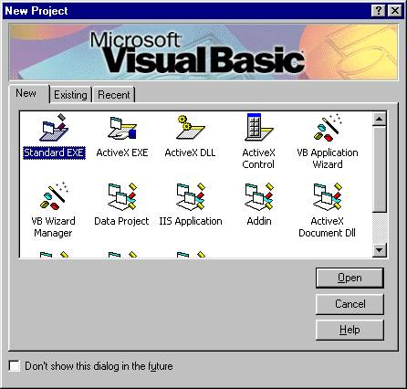

-Analyser les besoins des utilisateurs et rédiger les spécifications fonctionnelles et techniques.
-Conception d'architecture logicielle, y compris la structure de la base de données et les interfaces utilisateur.
-Développez des logiciels à l'aide de Visual Basic, intégrant des fonctionnalités telles que la gestion des données, l'interface utilisateur et le reporting.